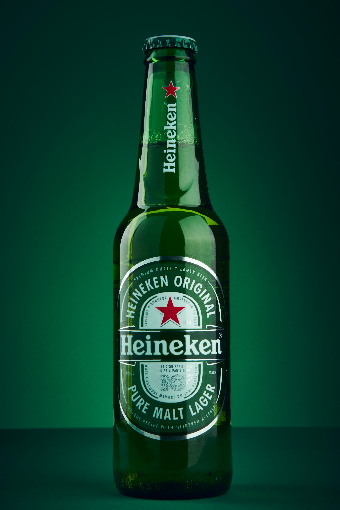

My Favorite Drinks
| DRINK #1 |

|
Guinness, a well-known Stout hailing from Ireland, is brewed at St.
James Gate Brewery in Dublin, where it has become a beloved and
highly sought-after beverage.
|
| DRINK #2 |

|
Heneiken is a pale lager beer hailing from the vibrant city of
Amsterdam, renowned for its rich cultural history and bustling canal
streets. This beer, originally brewed in the heart of the city,
boasts a refreshingly sour flavor profile and a bright, golden color
that beckons the senses. With its unique taste and rich heritage,
Heneiken is a beer that truly embodies the spirit of Amsterdam.
|
| DRINK #3 |

|
Peroni is an italian Beer. It is also a lager beer like Heneiken.
Peroni is very refreshing and has a slightly citrus aroma from it.
|